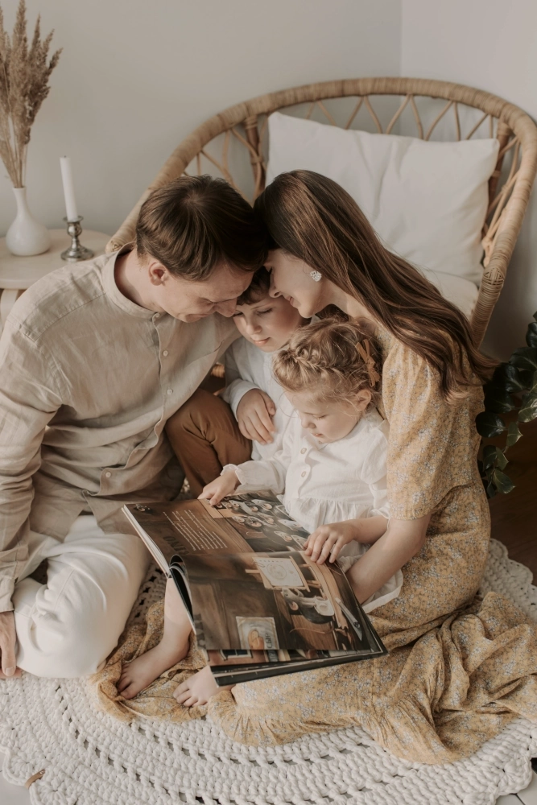
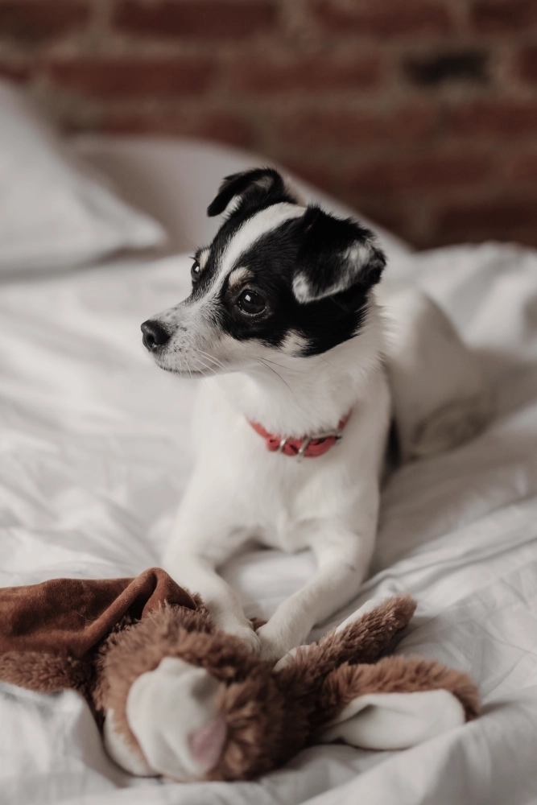

Familjefotografering
Fånga den där magiska dynamiken som bara finns i en familj – skratt, närhet och små ögonblick som betyder allt.
Gravidfotografering
En mage som bär på ett litet liv. Stillheten, förväntan och kärleken som redan finns där.

Husdjursfotografering
De trogna blickarna, det glada språnget och den varma närheten. Husdjur är familj – på riktigt.